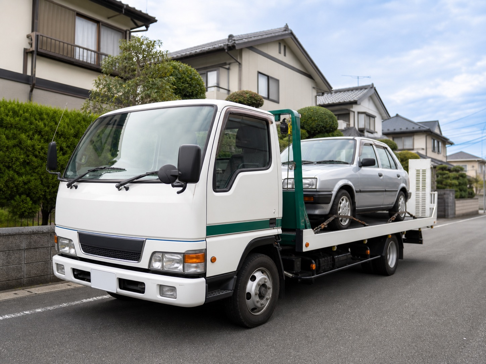

不動車
バッテリー上がり、長期間放置、エンジンがかからない車も相談できます。
Target
車の状態と置き場所を確認して、無料引き取りの可否と搬出方法をご案内します。
バッテリー上がり、長期間放置、エンジンがかからない車も相談できます。
公道を走れない車でも、置き場所や車両状態を確認して引き取り方法を案内します。
年式が古い車、走行距離が多い車、通常の買取が難しい車も確認します。
損傷の程度、タイヤの状態、搬出スペースを確認して対応可否を判断します。
駐車場やご実家に置いたままの車も、鍵や書類の有無を確認して案内します。
車検証、自賠責、リサイクル券、印鑑証明など、状況に合わせて必要書類を確認します。
Included
通常の引き取りは無料を前提にしています。特殊な搬出が必要な場合は、作業前に必ず説明します。
無料引き取りの条件として、重量税・自賠責・リサイクル券・自動車税の還付金相当額のお支払い・返金は発生しません。税金等の制度上の扱いは車両状態や手続きにより異なります。
Flow
車の写真と置き場所が分かると、引き取り方法を確認しやすくなります。
車種、年式、走行距離、車の状態、引き取り場所をお知らせください。写真があると確認が早くなります。
駐車場所、道幅、車の向き、タイヤや鍵の有無を確認し、引き取り方法をご案内します。

事前に案内した内容に沿って引き取りします。追加作業が必要な場合は、作業前に説明します。
オーダーオートは、古物営業法に基づく許可情報を表示しています。
古物商許可：広島県公安委員会 第731292600035号
氏名：空 篤志